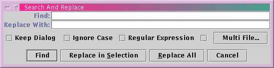

jEdit has a very powerful search and replace system. It supports multi-file searching, regular expressions, and a grep-like "HyperSearch" feature. This chapter covers it in detail.
Search>Find (keyboard equivalent: Control-F) displays the search and replace dialog box. Search>Find Selection (keyboard equivalent: Control-E Control-F) displays the search and replace dialog box and with the currently selected text already inserted in the Search for field.
The search string can be entered in the Search for: field. This field stores previously entered strings; see the section called History Text Fields.
The replacement string can be entered in the Replace with: field. This field stores previously entered strings; see the section called History Text Fields.
If the Keep Dialog check box is selected, the find dialog box will remain open until it is explicitly closed. Otherwise, it will be closed after a successful search or replace operation.
If the Regexp check box is selected, regular expressions can be used to match inexact sequences of text; see Appendix C.
If the Ignore Case check box is selected, the search will be case insensitive; entering "Hello" in the search field will locate "hello", "HELLO", and "HeLlO"
If the Multi File check box is selected, multi file searching will be enabled. For more information about multi-file searching, see the section called Searching in Multiple Files.
Clicking Find or pressing Enter will begin the search. If an occurrence of the search string can be found, it will be highlighted. If the search was unsuccessful, a dialog box will prompt if the search should be restarted from the beginning.
Clicking Replace in Selection will replace all occurrences of the search string with the replacement string in the selected text. This will beep if there is no selection or if it doesn't contain the search string.
Clicking Replace All will replace all occurrences of the search string with the replacement string, spanning multiple buffers if multi file search is enabled. This will beep if the search string could not be found.
Clicking Cancel will close the search and replace dialog box.
Figure 7-1. The search and replace dialog box
